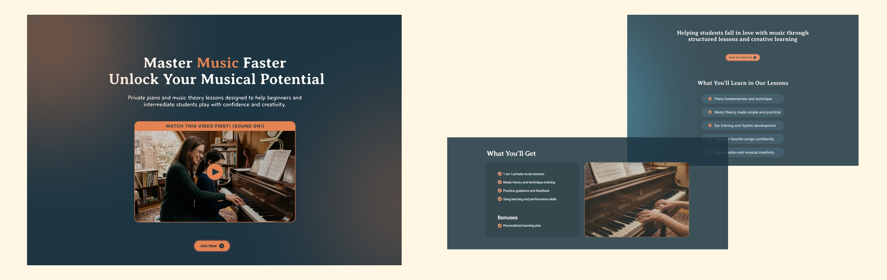
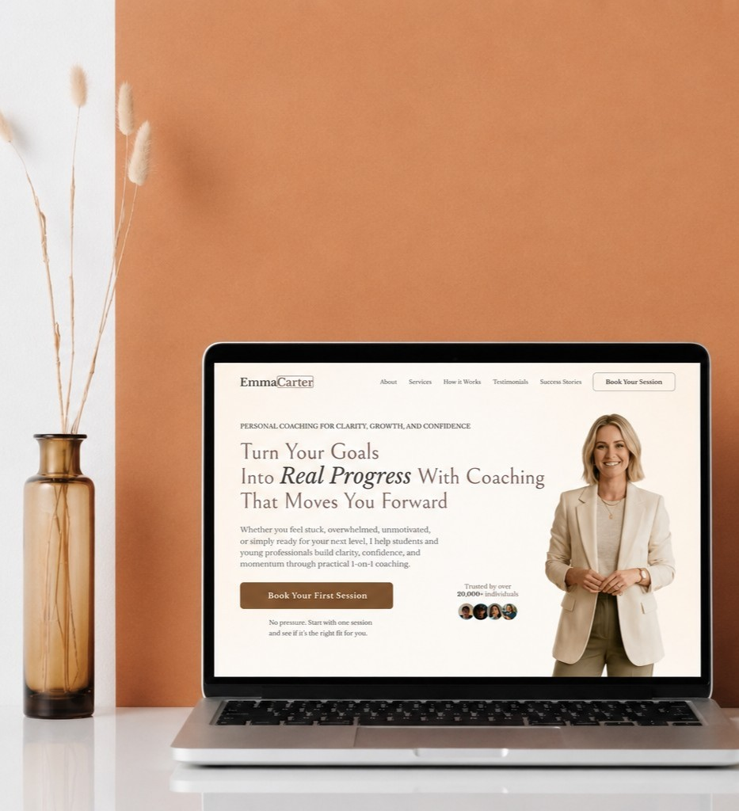
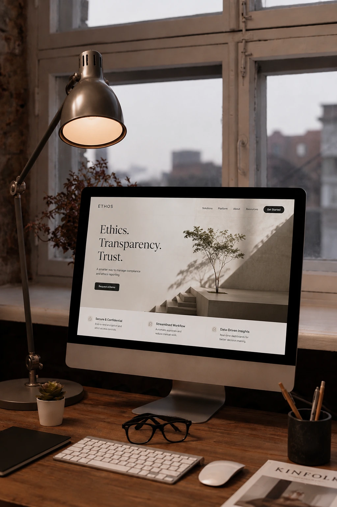

Independent web design & development
把你的服務，
做成一個真正
能帶來行動的網站。
從定位、內容架構、視覺設計到前端開發，一次完成一頁式網站、銷售頁與客製化系統。
查看精選作品01 / What I do
不只把畫面做漂亮，也把訊息、操作與成交路徑整理清楚。
網站應該讓訪客快速理解你是誰、你能解決什麼問題，以及下一步該做什麼。
02 / Selected work
讓作品自己說話。
以真實頁面為主角，直接呈現不同服務、受眾與轉換情境。

03 / Services
從第一個頁面，到能長期使用的網站系統。
依照你的商業目標與實際營運方式，選擇合適的交付範圍。
品牌官網
建立可信任的公司形象，整理服務、品牌資訊、聯絡入口與 SEO 基礎。
Landing Page
聚焦一個產品或服務，讓訪客更容易理解價值、留下名單或預約。
銷售頁與 Funnel
串起流量、信任、表單與後續聯繫，讓行銷不只停在曝光。
客製化網站系統
依營運流程規劃預約、報名、訂單、資料收集與後台管理。
04 / Use cases
讓客戶一眼看見：這正是我需要的。
QR Code 點餐
把紙本菜單轉成手機點餐流程。
線上預約
讓客戶選服務並集中管理需求。
報名與名單收集
說清楚價值，建立可追蹤的報名入口。
諮詢 Funnel
串起介紹、篩選表單與後續聯繫。

05 / From problem to system
把人工、分散與重複工作，轉成更順的線上流程。
只要流程可以被整理，就有機會成為真正能使用的網站工具。
目前問題解決方式
紙本菜單與人工確認太慢QR Code 點餐系統
預約散落在不同訊息管道線上預約與時段管理
客戶資料無法集中追蹤表單與後台管理
廣告有流量卻沒有轉換銷售頁與 Funnel Flow
RWD 響應式
手機、平板與桌機都能穩定閱讀與操作。
SEO 基礎設定
處理標題、描述、分享資訊與基本搜尋可讀性。
表單與名單收集
收集需求，協助後續聯繫、篩選與管理案件。
追蹤與轉換事件
預留 GA、Meta Pixel 或其他追蹤整合空間。
07 / Process
清楚的合作節奏，從想法走到上線。
- 01
需求討論
確認目標、受眾、內容、功能與預算範圍。
- 02
規劃報價
整理資訊架構、頁面範圍與交付內容。
- 03
設計開發
建立視覺方向，完成響應式頁面與互動。
- 04
測試上線
檢查裝置、速度、表單與追蹤後正式發布。

08 / A clear delivery
信任感不是靠口號，是每一步都交代清楚。
01「我知道這個網站要解決什麼問題，也知道下一步怎麼推進。」
02「服務、流程、表單與後台不是分散的，而是一個完整體驗。」
03「畫面有質感，更重要的是能支援實際獲客與營運。」
09 / Start a project
有網站或系統想法？先告訴我你的需求。
不需要一開始就把規格想完整。先描述目前遇到的問題、想達成的目標與預計上線時間，我會協助整理成可執行的方案。
hello@twoin.tw